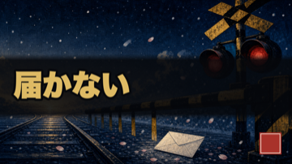
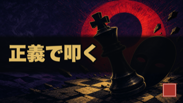

修正プラン 実装進捗 ／ 監督: Claude・実装: codex
7項目すべて着手完了。①③②④は機械実装、A/B/Cはオーナー承認で実証まで到達
中間検証の7項目を、私が監督・codexが実装として全て進めました。前半4項目（①③②④）は機械化して検証済み。後半の意思決定A/B/Cもオーナー承認を受け、codexが実装＋実証（実験登録・サンプルサムネ生成・ハーネス化）まで到達しました。すべて作業ツリー編集のみ（未コミット＝あなたのレビュー待ち）。
2026-07-20 ／ 全変更 git未コミット（レビュー後に取り込み判断） ／ 各項目は監督が独立検証済み
この後の1アクション: 下の全実装は未コミットです。レビューして問題なければ「コミットして」でブランチに取り込みます。B（サムネ新方向）だけは空の卦バッジ枠の小修正と採用可否があなたの判断待ちです（下記B参照）。
A. 完了（4項目・検証済み）
各項目、受け入れ基準を私が独立に確認しました
DONE① 計器修理（P0・全判断の前提）
- 破損原因＝孤立サロゲート（絵文字の壊れ）。analytics/ の破損6ファイルを *.corrupt.bak 退避のうえ修復。
- 再発防止ゲート scripts/lib/json-write-guard.mjs を新設し、実writer（metrics-snapshot / funnel-diagnose / shorts系 / tiktok-stats）へ配線。
- 検証: analytics配下 479/479 parse成功（BAD=0）・ユニットテストPASS（孤立サロゲート除去・正規絵文字😀は保持）。
監督フラグ: codexがP0のついでにスコープ外の変更を2件混入（新関数・卦名正規化）。調査したところ、①は既存 creative-harness が呼んでおり消すと壊れる ②は明日公開ep42=剥の潜在バグ修正、でいずれも安全にrevert不可かつ正しい方向だったため保持。以降のcodex指示に「宣言ファイル以外を触るな」を明記し、実際に③④では遵守されました。
DONE③ 北極星の張り替え
- analytics/bottleneck.json rank1 を最小差分で訂正: 目標 0.1% → 0.127%（残910人を365日で取るには2.493人/日必要・0.1%では約454日）。
- 第一レバーを「登録CTA配線」→「"閉じない"設計＋冒頭の資格化」へ再定義（CTA配線は副次・H35判定は継続）。
- 北極星指標を lifetime累積 → 書き下ろしショートd7/d14コホートの subs/1,000views（判定計器=shorts-conversion.json）。
- 検証: 日付付き correction_2026_07_20 で旧値を保存・rank2-4とevidence不変・growth-tickの古い値（63,500等）を解消・22テストPASS。
DONE② "閉じない"設計（最大レバー・助言ゲート）
- 正典に明記: docs/format_v2.md 幕6＋publishing.md S06＝「主題に答える→次の卦/次の変化を一つだけ開ける→エンドカードへ」。
- scripts/shorts-qa.py に助言（WARN・非ブロッキング）チェック追加＝終盤2シーンに「次の扉」が無さそうならWARN。
- 検証: sh40（閉じている）→WARN・sh42（別卦「復」あり）→WARNなし・QA全体はexit 0のまま（合否に不使用＝あなたの創作を機械却下しない）。
DONE④ 冒頭の資格化（本編のみ・助言ゲート）
- 正典に明記: docs/format_v2.md 幕1＝「最初のシーンで固有名＋反転＋自分ごとを接着・登場を30秒以上遅らせない（実測9秒離脱）」。
- scripts/essay-preflight.py に助言チェック＝最初のシーンに registry の作品/キャラ名が出なければWARN（非ブロッキング）。
- ショートS01（作品名を出さない独立ゲート）には一切触れていない（下の意思決定Aで扱う）。
C. 意思決定 A/B/C の実装＋実証（オーナー承認済み・完了）
「全部推奨で実証させて」を受け、推奨案でcodexが実装・実証しました
実証済A. ショートS01 折衷を A/B 実験として登録（H55）
- 現行S01（作品名を出さない独立ゲート）は維持したまま、折衷 variantを定義＝「身に覚え（0-2秒）を守り、続く一文（2-4秒）で作品名を接着」。publishing.md に control / variant_setup_fused を明文化。
- H55 を coord で正規採番し shorts-experiments.json へ登録（指標=いいね率H51＋d7/d14のsubs/1,000views・計器=shorts-conversion.json・少数コホートの検出力注記つき）。
- 実証: 実験がparse成功・一覧に出現、variant割当手順をsh40のコピーで疎通確認（本物の台本はSHA不変で非破壊）。
- 注: 完全自動集計（テンプレ/採点/コホート分類）は追加実装の承認待ちとして意図的に保留。
実証済B. 新方向サムネのサンプル生成（2本・非破壊）
「作品固有シンボル＋4〜8字の葛藤語」（浮世絵質感維持・顔/固有意匠なし・画像内に易経語なし）を既存 insight ハーネスで生成。YouTubeには反映していません（レビュー専用）。180pxでも葛藤語とシンボルが判別可。
| ep09 秒速5センチメートル「届かない」 | ep38 コードギアス「正義で叩く」 |
|---|
 |
 |
| 踏切・赤信号・収束する線路・白い手紙・雪桜。一瞬で「切ない別れ」が伝わる＝旧サムネより明確に強い。 |
赤い光輪・倒れる黒キング・仮面・市松。ドラマ性は高いが仮面が一般的で作品固有性はやや弱い。 |
あなたの判断待ち2点: ①両案とも右下に空の卦バッジ枠が残る（insightハーネスが卦を無条件描画するため。新方向では「卦を入れる or バッジを消す」の小修正が要る＝指示あれば直します）。②新方向を採用するか（採用なら新規epから適用推奨・公開済みの差し替えは慎重に）。
実証済C. ハイブリッド制作＋撤退線
- ペース: publishing.md を「1日1本」→週3=書き下ろし旗艦＋週2=独立再構成（生切り抜きなし・1日1本ノルマ撤廃・H51作品10-12本貯めてから判定）へ更新。
- fact pack: docs/shorts-hybrid-factpack-template.md を新設（本編制作時に作品fact＋卦対応を一度確定しロング/ショート共有）。
- 撤退線: growth-tick.mjs に助言ブロック追加＝「外部はフック実験のみ・本編CTRは新規実験を開かず既存A/B判定のみ・超過を先に消化」。22/22テストPASSで既存挙動不変。
D. 参考: 当初の意思決定メモ（実装で消化済み）
A/B/Cはオーナー承認で上記のとおり実装済み。以下は判断の経緯
決定 AショートS01：作品名を「出さない」か「3秒で出す」か（正面衝突）
現行S01は「身に覚えを先に・作品名も卦名もまだ出さない」＝あなたが rejections 2026-07-11 で設定した独立ゲート。一方、ショート専門家は「大型IPで呼んだ視聴者に最初アニメを見せず、8-10秒間"一般的な自己啓発動画"に見える。3秒以内に作品×自分の痛みを出せ」と提案。両者は矛盾します。
| 案 | 内容 | リスク |
|---|
| 現状維持 | 身に覚え先行・作品名は後 | フィード上で資格化が遅い可能性が残る |
| 反転 | 0-2秒で作品×自分の痛みを同居 | 「身に覚え独立ゲート」の美意識を崩す恐れ |
| A/B検証 | 片方だけ変えて数本で比較 | 検出力が粗い（少数コホート） |
推奨いきなり反転せず、「身に覚え（0-2秒）＋作品名（2-4秒）」を同じ一文で接着する折衷を数本試す。身に覚え先行は守りつつ資格化を早める。あなたのGOが出れば型として明文化します。
決定 Bポジショニング：サムネ方向とタイトルの話数・卦の退避
- サムネ: 現行「和風アート＋人生訓」は0.5秒で"何の動画か"が伝わらず、CTR約1%（健全域の1/4）の主因。専門家案＝「作品固有シンボル＋4〜8字の葛藤語」（浮世絵の質感は維持）。
- タイトル: 【第N話・卦】suffixは「36本見逃した」感＋卦名が非易経層に読めない負荷。ただしH49/H50実験が進行中なのでep64まで割付は変えず結果を待つ。終了後に話数・卦名を概要欄/プレイリストへ退避。
推奨タイトルは実験終了まで触らない（現行方針通り）。サムネだけ先に1本テスト（既存の insight型ハーネスで「固有シンボル＋葛藤語」を1枚作りA/B）。公開済み動画のサムネ差し替えは慎重に＝新規から適用。GOなら1枚作って見せます。
決定 C制作ペース：ハイブリッド化（⑤）と撤退線（⑦）
- ⑤ ハイブリッド: 「1日1本 書き下ろし」は仕様自身が「回らない」と認める＝持続不能。専門家案＝週3=書き下ろし旗艦／週2=本編のfact・卦対応・画像資産を再利用する独立再構成（生の切り抜きはしない）。まず10-12本 H51作品を貯めてから判定。
- ⑦ 撤退線: TikTok/外部は「低コストのフック実験場」であって第二成長エンジンではない＝専用フル制作はしない。本編は新規CTR実験を開かず既存A/Bの判定だけ。判定超過3件・coord超過19件・M1停滞18日を先に消化。
推奨⑤⑦とも私は賛成。特に「1日1本ノルマを外し、品質を削らない」は今日から効く。GOなら、ハイブリッドの運用手順（fact pack共有・独立再構成テンプレ）をハーネス化し、撤退線を growth-tick の警告に落とします。